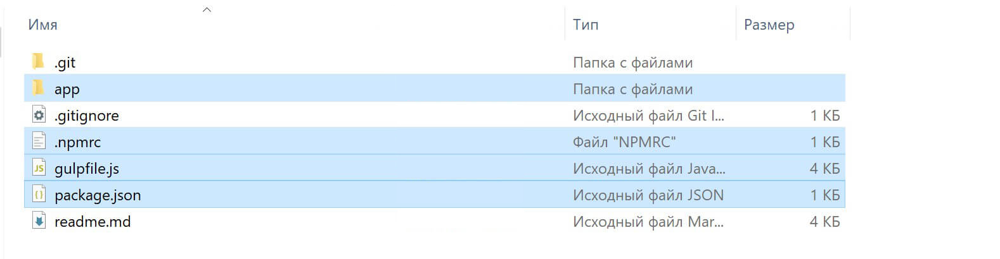

В данном уроке мы познакомимся со стартовым шаблоном для верстки сайтов OptimizedHTML 5. Рассмотрим возможности стартера и я расскажу об отличиях от предыдущей версии.

Полезные ресурсы урока:
- OptimizedHTML 5 на Github
- Отложенная загрузка изображений Lazy Load
- Документация Gulp на русском
- Gulp для самых маленьких
- Верстка реального проекта на стартере
Данная версия стартера является самой легкой из всех представленных ранее, было удалено все лишнее и добавлены мощные инструменты для JS-разработки, include HTML parts на стороне сервера Browsersync, build и многое другое. Стартер стал более универсальным, предлагая базовые возможности для дальнейших модификаций под конкретный проект. В этом, собственно, и заключается основной смысл данной версии. Bootstrap, jQuery и прочие модули и библиотеки по умолчанию отключены, в отличие от предыдущих версий, но вы в любой момент можете подключить их и использовать в проекте.
Что касается OptimizedHTML 4 и всех остальных версий стартера, они поддерживаются в актуальном состоянии и вы по-прежнему можете использовать их в работе. Новые версии стартера OptimizedHTML отражают скорее не прогрессию, а лишь небольшие изменения Gulpfile и структуры, для удобства использования в каждом конкретном случае.
Из основных изменений OptimizedHTML 5: добавлены инстументы Webpack и Babel для современной JS-разработки, добавлен сброс стилей с использованием Bootstrap-reboot, изменен и актуализирован .htaccess (см. readme.md на странице GitHub) для кеширования файлов, добавлено сжатие изображений, добавлен импорт частей HTML файлов на стороне сервера, сборка проекта и т.д. Обо всех возможностях мы поговорим чуть позже, а сейчас давайте посмотрим на структуру стартера:
Обращаем внимание только на выделенные папки и файлы. Здесь мы видим папку app, в которой по-традиции находятся основные файлы проекта, gulpfile.js и package.json. Npmrc в настоящее время отсутствует в стартере.
1. Gulpfile
В первую очередь, нас интересует gulpfile.js. Давайте с ним ознакомимся.
Если вы не знаете, что такое Gulpfile и для чего вообще нужен Gulp, рекомендую ознакомиться с уроком «Gulp для самых маленьких».
В самом начале файла мы видим 2 опции:
- preprocessor: Опциональный выбор препроцессора (sass, less, styl). Все препроцессоры и подготовленные для них настройки находятся в папке "styles/". Обратите внимание, 'sass' работает также и с синтаксисом Scss в директории "styles/sass/blocks/". Директория "blocks/" полностью подключается в основной файл и именно в этой директории следует создавать новые стили проекта с расширением *.sass или *.scss, в зависимости от того, какой синтаксис вы предпочитаете. При использовании любого другого препроцессора, новые файлы в директории "styles/{preprocessor}/blocks/" будут автоматически импортированы в файл "styles/{preprocessor}/main.*", скомпилированы и сжаты.
- fileswatch: Список файлов, при изменениях которых или в которых будет происходить жесткая перезагрузка страницы в браузере.
1.1 Local Server
browsersync – функция, запускающая локальный сервер с автообновлением страниц в браузере и на других девайсах в вашей сети Wi-Fi. Построение функции используется в соответствии с документацией Browsersync. Здесь мы просто указываем базовую директорию, с которой будет работать Browsersync – это папка app, а также отключаем уведомления. Параметр online можно установить в false, если вы хотите, чтобы Browsersync работал, когда ваш компьютер не подключен к интернету. Кроме того, Browsersyn настроен на работу с SSI для реализации инклудов частей html файлов проекта на лету с использованием конструкции:
<!--#include virtual="/parts/header.html" -->
Кроме того, можно задавать переменные SSI. Например:
<!--#set var="title" value="OptimizedHTML 5" --> <!--#include virtual="/parts/header.html" -->
И выводить их в parts (/parts/header.html):
<title><!--#echo var="title" --></title>
1.3 Scripts
scripts – таск для продвинутой работы с JavaScript.
Все пользовательские скрипты следует писать в файле "app/js/app.js". Также можно импортировать в этот файл необходимые JS модули.
1.2 Custom Styles
styles – таск для работы с кастомными sass|less|styl стилями проекта. см. папку "app/styles/".
Все кастомные (пользовательские) стили прописываются во вновь созданном или уже имеющемся файле в директории "styles/{preprocessor}/blocks/", а не в основном файле "styles/{preprocessor}/main.*" (желательно). Рекомендуется разбивать файлы по смыслу в директории "styles/{preprocessor}/blocks/", они автоматически будут подключены в "styles/{preprocessor}/main.*", скомпилированы и сжаты. Основные настройки проекта вынесены в отдельный файл "styles/{preprocessor}/_config.*".
USER VARIABLES SECTION – секция конфигурационного файла "styles/{preprocessor}/_config.*", которая предназначена для объявления sass-переменных проекта. Это определение акцентного цвета макета, цвет текста и других глобальных переменных, которые можно использовать в вашем основном sass-файле. Отдельно стоит упомянуть переменную $grid-gutter-width и ее сокращенную версию $gutter в конфигурационном файле препроцессора Sass. Обычно у макетов есть стандартизированные отступы между блоками, которые можно определять с использованием этой переменной. Кроме того, $grid-gutter-width является переменной Bootstrap сетки, поэтому в случае, если в проекте будет использоваться Bootstrap, отступы между колонками будут также определяться переменной $gutter, если вы используете Sass препроцессор. Другие препроцессоры не работают с исходниками Sasss, там необходимо будет переопределять отступы напрямую.
IMPORT SECTION – место для подключения Sass и CSS библиотек к проекту. В OptimizedHTML 5 по умолчанию подключены некоторые полезные библиотеки от проекта Bootstrap. Это сброс стилей для вех браузеров bootstrap-reboot.scss и миксин брейкпоинтов Bootstrap для адаптивной верстки (брейкпоинты Bootstrap работают только в случае выбора препроцессора Sass). Это весьма легкие, но полезные библиотеки, которые пригодятся в любом проекте. Коллекция bootstrap-reboot была выбрана не случайно. Изначально я планировал включить в стартер normalize.css – также весьма популярный ресет стилей, но остановился именно на bootstrap-reboot из-за неплохой стартовой стилизации, которая позволит сэкономить немного времени в процессе верстки. Кроме того, можно раскомментировать строку с подключением bootstrap-grid и использовать сетку Bootstrap в своей работе.
FONTS LOAD SECTION – содержит несложный миксин для подключения шрифтов в проект и примеры его использования. В OptimizedHTML 5 используются только шрифты в формате Woff2. На данный момент это самые легковесные файлы веб-шрифтов. Этого формата вполне достаточно. Если вы использовали Google Fonts, то, наверняка, знаете, что там предлагается подключение именно этого формата шрифтов. Я рекомендую не использовать сторонние сервисы, а подключать шрифты непосредственно, с вашего сервера, так как это позволяет более гибко управлять кеширование. Формат шрифтов Woff2 добавлен в список для кеширования в обновленном коде .htaccess на GitHub странице стартера. Но к нему мы подойдем чуть позже.
Все пользовательские стили пишутся в любых файлах выбранного препроцессора в директории "style/{preprocessor}/blocks/", в любой последовательности и автоматически импортируются в основной файл main.*.
Обратите внимание на опцию Autoprefixer grid: true, которая автоматически добавляет нужные префиксы для Internet Explorer в случае использования CSS Grid.
1.4 Сжатие изображений
Рассмотрим некоторые правила работы с изображениями в стартере OptimizedHTML 5:
- Все исходные изображение размещаются в папке "app/images/src/"
- Готовые сжатые изображения попадают в "app/images/dist/" автоматически. Именно такая структура изображений проекта позволяет контролировать измененные изображения и включать обработку только в том случае, если файл был добавлен или изменен. Именно поэтому изображения сжимаются без изменения оригинальных имен.
- Изображения, которые не нужно сжимать можно разместить непосредственно в "app/images/".
В результате различных тестов самых разных инструментов и модулей для работы с изображениями, я пришел к выводу, что именно использование плагина gulp-imagemin дает отличное качество при хорошем сжатии и нормальный контроль за изменениями в папке изображений.
Если было удалено достаточно большое количество изображений в проекте, папку "app/images/dist/" можно удалить. Все изображения сожмутся заново и эта папка появится вновь без лишних файлов.
1.5 Files & Reload
В переменной "fileswatch", в gulpfile.js, вы можете определить перечень расширений файлов, за которыми будет наблюдать вотчер и выполнять релоад страницы.
1.6 Deploy
rsync – таск для деплоя локальных изменений на рабочий сервер. gulp-rsync позволяет загружать на сервер только те файлы, которые претерпели какие-либо изменения или были добавлены в проект. По умолчанию, rsync будет загружать на сервер собранный командой build проект из папки "dist/".
1.7 Build
Команда build собирает проект в папку "dist/". Выполняется повторная сборка всех ассетов и HTML-файлов.
2. Кеширование
Для включения кеширования ресурсов, скопируйте код со страницы readme стартера на GitHub и разместить его на вашем сервере в уже имеющемся или вновь созданном файле ".htaccess", если ваш сервер поддерживает данный тип конфигурационных файлов. В Windows создать ".htaccess" можно указав точку в начале файла и в конце при переименовании. В результате вы получите нужное именование с одной точкой в начале.
Правила работы со стартером OptimizedHTML 5 описаны на страничке репозитория GutHub на английском языке, рекомендую ознакомиться с Readme данного проекта на GitHub и почитать код самостоятельно для получения дополнительной информации, там есть все необходимые комментарии, все интуитивно понятно.
На реальном-же примере мы будем использовать этот стартер в будущих интенсивах «Джедай верстки» и других учебных проектах. Например, в уроке Создание 3D Tilt анимации на JavaScript мы очень подробно рассмотрели работу со стартером OptimizedHTML 5.
Премиум уроки от WebDesign Master


Другие уроки по теме «Инструменты»
- Настройка Parcel для веб-разработки
- Tailwind CSS для начинающих. Подробный урок по подключению, настройке и использованию
- Настройка VS Code для веб-разработки
- Starter - Простой стартер для веб-разработки
- Урок по хостингу от А до Я. Сайты, базы, домены, SSL, SSH, sFTP
- Gulp - Актуальное и исчерпывающее руководство для самых маленьких